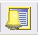
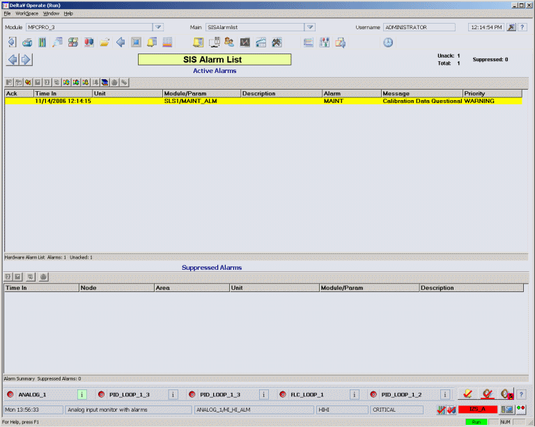

SIS Alarm List display
The SIS Alarm List display contains unacknowledged or suppressed (either shelved, out of service or both) SIS-related alarms. SIS-related alarms include SIS module alarms, Logic Solver hardware alarms, and HART device alarms for devices connected to a Logic Solver. Access the SIS Alarm List from the

button on the toolbar window in the DeltaV operator workspace.The button is visible when there is at least one active, unacknowledged or suppressed SIS-related alarm.
The SIS Alarm List display has two alarm lists, one for active SIS-related alarms and one for suppressed SIS-related alarms. In addition to appearing on this display, SIS-related alarms also appear on the standard Alarm List display and the standard Suppressed Alarm display.
The following shows an example of the SIS Alarm List picture in run mode.

This picture shows the total number of active alarms, the number of unacknowledged and suppressed alarms for the current area, and lists active alarms by:
Ack - the acknowledged status.
Time In - the time at which the alarm went active. If the alarm is active when a controller switchover occurs, the alarm is regenerated with a new Time Last value. The value of Time In is maintained.
Unit - the name of the unit that owns the module that is in alarm.
Module/Parameter - the name of the SIS module that contains the alarm and the active alarm.
Description - a description of the module.
Alarm - the alarm word for this alarm.
Message - a message associated with the alarm. The format of the alarm message is determined by the alarm type.
Priority - a word, such as Critical, Warning, Advisory, or any user-configured priority that indicates the importance of an event to the operator and the priority of the alarm at the workstation. The priority affects the order in which the alarm appears in this picture and in the Alarm Banner.